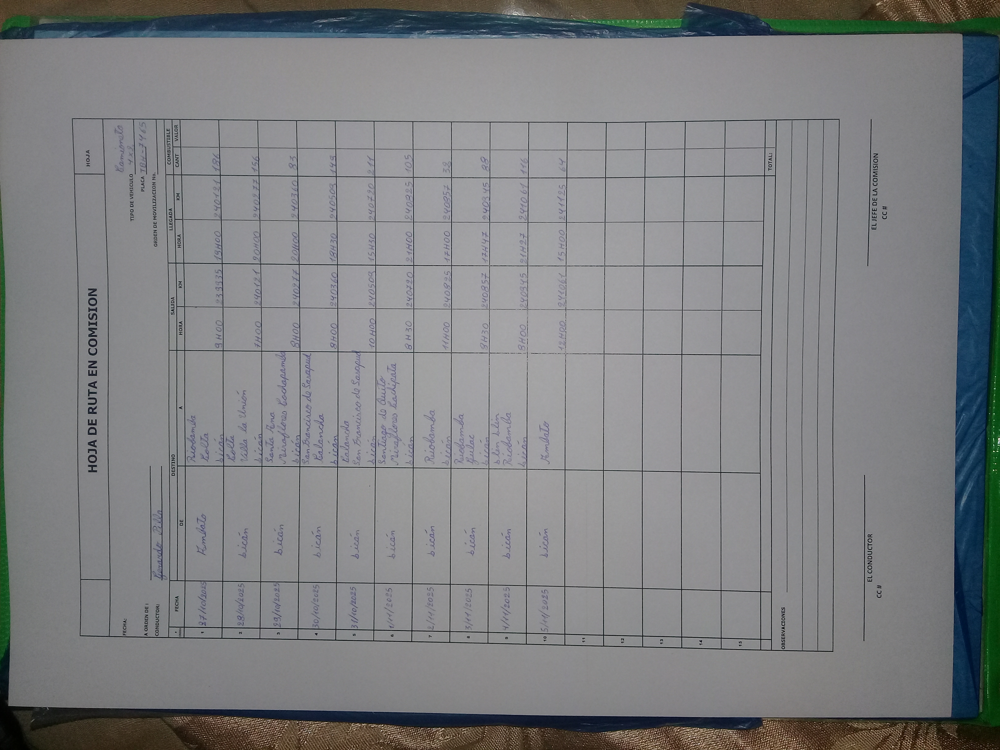
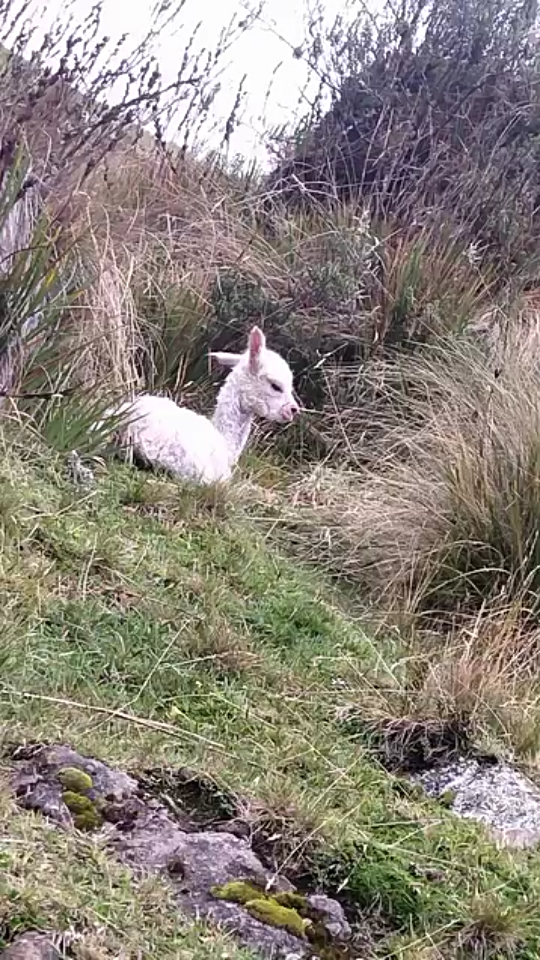

Segunda jornada

Tuvimos que improvisar para sacar el carro del kikuyo
Esto fué el día Miércoles 29 de octubre del 2025 a las 10 de la mañana, en el cantón Colta - parroquia Columbe - caserío Miraflores Cochapamba
El Domingo 2 de Noviembre del 2025, a las 10 de la mañana, llegó supervición nacional
Recomendó a los digitadores, que no deben rayar la hoja A3 de los mapas, solamente deben poner un punto o un círculo

Alpaca recién nacida
gps {-1.893973, -78.813119}
Ruta para llegar a la Alpaca recién nacida
Cantón Colta - parroquia Columbe - caserío Llin Llin
El Martes 4 de Noviembre del 2025 a las 12 pm